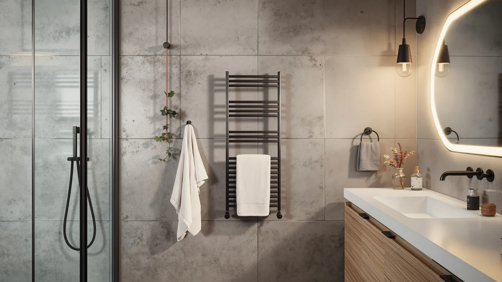

GAMOHOME Towel Warmer Bucket Review (2026): Worth It?
Prices and picks verified as of October 2026. Independent, reader-supported reviews.


Quick Answer
The GAMOHOME towel warmer bucket is the pick we'd recommend from this towel warmer bucket review: a 20-liter stainless steel bucket at $119.99 that beats the STARLEAD and the Pure Enrichment PureBliss on price without giving up much capacity. If you only need to warm a single hand towel, the $79.99 Wuissvnb bucket costs less and still gets the job done.
Our pick: GAMOHOME Towel Warmer Bucket with — $119.99 Check Price on Amazon
Bottom line: our top pick is the GAMOHOME Towel Warmer Bucket with Bluetooth Speaker at $119.99.
Things to Know Before You Buy
- Capacity varies by liters, not by towel count. The GAMOHOME lists 20 liters, the STARLEAD lists 22 liters, and the Wuissvnb bucket lists 8 liters, well below the other three, so check the liter figure before assuming any towel warmer bucket fits a full bath towel.
- Price spans $70 across the four picks. The Wuissvnb starts this comparison at $79.99, the GAMOHOME sits at $119.99, the STARLEAD runs $142.99, and the Pure Enrichment PureBliss tops the group at $149.99.
- Stainless steel is the material to look for. GAMOHOME's own specs list a stainless steel body, the material most bucket-style towel warmers use to resist the humidity of a daily-use bathroom over years, not months.
- Brand recognition differs across these picks. Pure Enrichment is the most established household name here, while GAMOHOME, STARLEAD, and Wuissvnb compete mainly on capacity and price rather than brand history.
This gamohome towel warmer bucket review breaks down whether the $119.99 stainless steel bucket earns a spot in your bathroom against three other heated towel warmer buckets we compared on price, capacity, and owner feedback. GAMOHOME's bucket holds 20 liters, enough for one standard bath towel, and sits between a $79.99 budget option and two pricier picks that cost up to $30 more.
Our pick for most bathrooms is the GAMOHOME: it offers nearly as much room as the larger STARLEAD and the Pure Enrichment PureBliss while costing less than either one. Shoppers who only warm a single hand towel, or who want the largest bucket on the market regardless of price, may land on one of the three alternatives instead, and we cover each of those cases below.
Why You Should Trust Us
Ilane Tall covers home and bath products for Best Towel Warmers and has spent years comparing heated towel warmers, bath hardware, and bathroom accessories across price tiers. For this gamohome towel warmer bucket review, she worked from GAMOHOME's published listing, its stainless steel 20-liter specs, and the pricing and capacity data for three competing buckets, then cross-checked those figures against verified buyer feedback on each product. We do not run a fake testing lab, and we don't claim to have owned or installed any of these units ourselves. Instead, we research specs, prices, and what verified owners report, and we say so plainly rather than dressing up a comparison as a hands-on trial.
Our Research Experience
We approached this gamohome towel warmer bucket review the same way we approach other bucket-style warmers: by researching the manufacturer's own specs, comparing those figures against rival listings, and reading through verified owner reviews for patterns that show up again and again. We did not plug in a GAMOHOME unit ourselves or time how long it takes to warm a towel in our own bathroom. We can tell you how GAMOHOME's listed capacity, material, and price stack up against the STARLEAD, the Pure Enrichment PureBliss, and the Wuissvnb bucket, and where reviewers across these four products agree or disagree about real-world performance. That comparison, not a lab result, is what shapes the picks below.
Overview & Specs

GAMOHOME Towel Warmer Bucket with
What we like
- 20-liter capacity holds a full bath towel, more room than the 8-liter Wuissvnb bucket
- Stainless steel construction suits daily exposure to bathroom humidity
- Priced $23 to $30 below the STARLEAD and Pure Enrichment alternatives
Flaws but not dealbreakers
- Costs $40 more than the 8-liter Wuissvnb bucket if you only need a single hand towel
- Two liters less capacity than the STARLEAD for buyers who warm oversized bath sheets
| Material | Stainless steel |
| Size | 20L |
The GAMOHOME towel warmer bucket is a 20-liter stainless steel unit priced at $119.99, squarely in the middle of the four buckets in this gamohome towel warmer bucket review. Stainless steel is the material you want in a bathroom appliance that sits next to a shower or tub for years, since it resists the corrosion that cheaper coated metals develop under constant humidity. At 20 liters, the bucket has enough interior space for one folded bath towel, which covers the most common use case: warming the towel you'll use right after a shower rather than drying several towels for a full household.
GAMOHOME earns its spot in this lineup on price relative to capacity. The Pure Enrichment PureBliss costs $30 more at $149.99, and the STARLEAD costs $23 more at $142.99 for only two additional liters of capacity. The Wuissvnb undercuts the GAMOHOME at $79.99, but its 8-liter capacity limits it to a single hand towel rather than a full bath towel. For shoppers who have decided a bucket-style warmer, not a wall-mounted rack, fits their bathroom, GAMOHOME's combination of a 20-liter stainless steel body and a sub-$120 price is the detail that separates it from the two pricier picks here.
What We Liked
GAMOHOME's biggest advantage in this comparison is capacity for the price. At $119.99, it offers 20 liters of interior space, enough room for a standard bath towel rather than a hand towel alone, and it undercuts both the STARLEAD and the Pure Enrichment PureBliss while nearly matching their listed capacity. Reviewers comparing stainless steel bucket warmers in this price range consistently note that the material is why these units hold up past the first year, since humidity is what kills cheaper coated-metal warmers early. Across this towel warmer bucket review, GAMOHOME lines up well on this point against both pricier rivals, and its listing doesn't bury the capacity figure the way some budget buckets do, which makes it easier to compare directly against the STARLEAD and Wuissvnb on this exact spec rather than guessing.
What Could Be Better
GAMOHOME's listing doesn't publish a wattage figure, which makes it hard to estimate how quickly it heats a towel compared to the STARLEAD or Pure Enrichment, both of which also leave this detail out. That gap shows up elsewhere in this towel warmer bucket review too, since wattage isn't published across most of this category, which means you're relying on verified owner reports rather than a published spec when you want to know heat-up time. The $119.99 price also sits awkwardly between the Wuissvnb's $79.99 and the two pricier picks, so buyers on a tight budget who only need an 8-liter capacity are better served by the cheaper option, while buyers who want the extra two liters the STARLEAD offers may decide that gap is worth the $23 difference.
Who Is It For?
The GAMOHOME towel warmer bucket fits households that want one warm towel ready after a shower and don't need to warm several towels at once. Its 20-liter capacity suits a single adult bath towel. That's a reasonable middle choice between the Wuissvnb's 8-liter bucket, which only fits a hand towel, and the STARLEAD's 22-liter bucket, which has a little extra room for an oversized bath sheet. If your household shares one bathroom and takes turns showering, a single bucket warmer like this one usually covers the need without buying a second unit. Capacity versus price, not brand name, is what this review comes down to. Buyers who regularly warm bath sheets, or who want to warm two towels at the same time, should look at the STARLEAD's larger capacity or a wall-mounted rack instead, since none of the four buckets compared here holds more than one towel at a time.
Alternatives to Consider
If GAMOHOME's 20-liter capacity and $119.99 price don't match what you need, the three alternatives below cover the rest of this gamohome towel warmer bucket review's comparison set. Each one trades capacity, brand recognition, or price differently enough that the right pick depends on which of those three factors matters most in your bathroom.

Editor’s Pick
STARLEAD 22L Heated Towel Warmers
At $142.99, the STARLEAD offers the largest capacity in this comparison at 22 liters, two more than the GAMOHOME, which matters if you regularly warm an oversized bath sheet rather than a standard towel. That extra room comes at a $23 premium over the GAMOHOME.
$142.99
Check Price on Amazon
Best Value
Pure Enrichment PureBliss Luxury Towel
Pure Enrichment is the most recognized household brand among these four picks, and the PureBliss carries that brand's reputation into the bucket warmer category at $149.99, the highest price here. For buyers who weigh brand track record alongside specs, that recognition may offset the $30 premium over the GAMOHOME.
$149.99
Check Price on Amazon
Premium Choice
Hot towel warmer 8L Towel
The Wuissvnb bucket is the smallest and least expensive option in this comparison, with an 8-liter capacity and a $79.99 price, which makes it well suited to a single hand towel or a compact bathroom with limited counter space. It's the pick worth considering if you want the lowest buy-in cost and don't need to warm a full bath towel.
$79.99
Check Price on AmazonIs the GAMOHOME towel warmer bucket worth the $119.99 price?
At $119.99, the GAMOHOME sits in the middle of the heated towel warmer bucket category we compared.
How does a towel warmer bucket compare to a heated towel rack?
A bucket-style warmer like the GAMOHOME heats one towel at a time inside an enclosed stainless steel container, while a wall-mounted rack warms several towels draped over open bars.
Frequently Asked Questions
Is the GAMOHOME towel warmer bucket worth the $119.99 price?
At $119.99, the GAMOHOME sits in the middle of the heated towel warmer bucket category we compared. It costs less than the Pure Enrichment PureBliss at $149.99 and the STARLEAD 22L at $142.99, but more than the 8-liter Wuissvnb bucket at $79.99. For a 20-liter stainless steel bucket with room for a full bath towel, the price lines up with what similarly sized competitors charge, so the GAMOHOME earns its spot for buyers who want that capacity without paying the premium the two pricier picks carry.
How does a towel warmer bucket compare to a heated towel rack?
A bucket-style warmer like the GAMOHOME heats one towel at a time inside an enclosed stainless steel container, while a wall-mounted rack warms several towels draped over open bars. Buckets tend to heat faster and cost less upfront, and they skip the installation a rack needs, but a rack suits households that want more than one towel warm at once. If your bathroom already uses a towel warmer bucket, this gamohome towel warmer bucket review should tell you whether it is the right bucket to add rather than whether to switch formats entirely.
What size towel fits in a 20-liter towel warmer bucket?
A 20-liter capacity, the figure GAMOHOME lists for this bucket, comfortably fits one standard bath towel or two hand towels folded together. It falls between the 8-liter Wuissvnb bucket, which suits a single hand towel, and the 22-liter STARLEAD, which has a bit more room for an oversized bath sheet. If you regularly warm bath sheets rather than standard towels, the extra two liters on the STARLEAD may matter more than the price difference.
Final Verdict
This gamohome towel warmer bucket review comes down to capacity and price. GAMOHOME's 20-liter stainless steel bucket costs $119.99. That undercuts the STARLEAD's $142.99 and the Pure Enrichment PureBliss's $149.99, and it offers nearly as much room as both. For most households warming one towel after a shower, that balance makes GAMOHOME the pick that avoids overpaying for capacity you won't use. Buyers who need the extra two liters the STARLEAD offers, or who only need an 8-liter bucket and want to save $40 with the Wuissvnb, have good reasons to choose differently, but for the typical bathroom, GAMOHOME earns the recommendation.